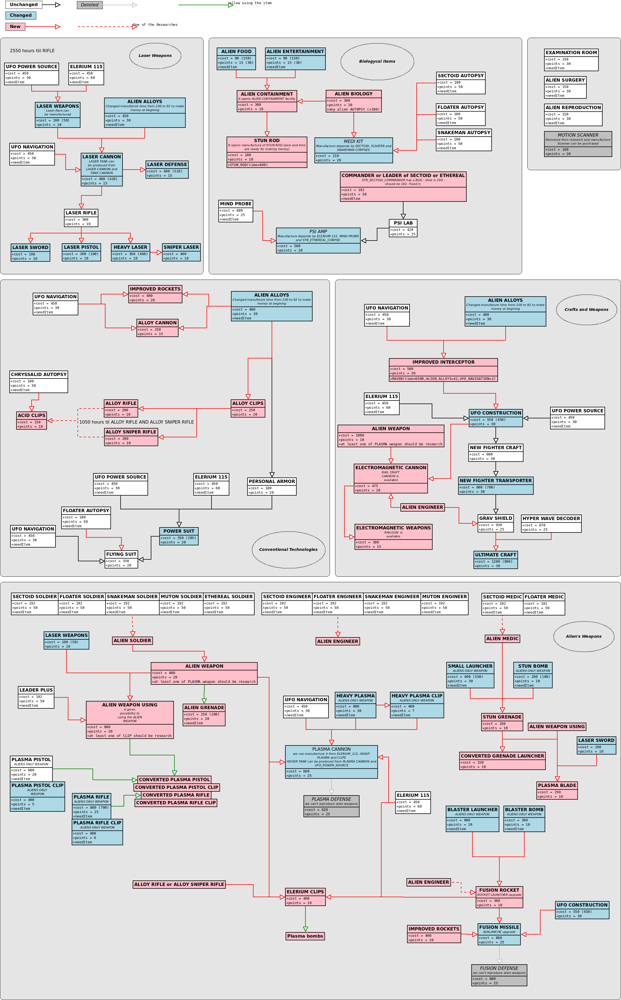

Research in the AwesomeGuns modification
One of the biggest interest in the game is a research tree. AwesomeGuns modification changes a few of research and implements a lot of new. The main concept can be divided in four sections: Biology, Aircrafts and conventional weapons, Laser weapons and Alien weapons.

Biological research
- Alien containment depends on alien biology which is necessary to understand how aliens live.
- The Alien food and Alien entertainment are necessary to prevent aliens from dying.
- The Alien biology opens the MEDI Kit which can be manufactured from alien corpses.
- Research the alins corpses and interrogation are important. These research are opening the alien weapons.
Aircrafts and conventional weapon
- Improved interceptor (RAVEN) can be research at beginning. This aircraft has a great defence and does not consume Elerium.
- A lot of weapons from alien alloys were implemented for aircrafts and battlefields.
- Electromagnetic cannon for aircrafts and Rail sniper gun can be be investigated in the middle of the game.
- Bullets from alien alloys which have a great power.
- Bullets from CHRYSSALID acid can be used against alien tanks.
- Elerium bullets that can blast enemy.
- New armours with different opportunities for soldiers.
- and more other innovations...
Laser weapon
- Laser technology depends on Elerium and UFO Power Source.
- Research of laser weapon starts from craft cannon and laser tank.
- Laser weapons production consumes Elerium.
Alien weapon
- Research of alien weapon depends on interrogation. Alien soldier, engineer and medic are necessary to move forward.
- The alien weapons are controlled by mind, therefore alien weapons can not be used by human without changing.
- The plasma pistols and plasma rifles can be converted for using in combats.
- The heavy plasma and blaster bombs can not be used in combats, but can be used in manufacturing weapons for aircrafts.
- The stun grenade can be manufactured from alien stun bomb.
- Humans cannot build defence facilities based on alien technologies, but the Rocket and Laser facilities were improved.
Some of the screenshots from the Awesome Guns modification